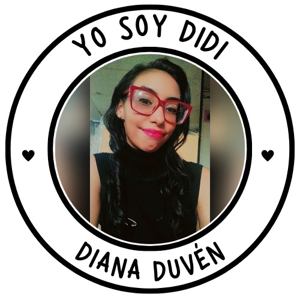

Sobre mí

¡Hola! Es un placer conocerte. Yo soy DiDi, pero muchos me conocen como Diana Duvén, tal vez me recuerdes pues en años previos al 2023 hice los muy conocidos "Libros de actividades" y por eso estoy aquí de nuevo, para que lo tengas entre tus actividades diarias de JW.
Tal vez te preguntes ¿por qué me hago llamar DiDi? Pues, cuando era niña solía autollamarme "las 2D o doble D", a medida que fui creciendo tuve muchos apodos, entre ellos "Carol o Dianita" pero definitivamente el más tierno de ellos fue DiDi.
¿Te gustaría saber que tengo preparado para tí?